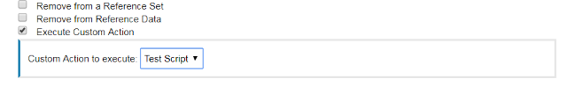

Exercise 1.3 - Configuring QRadar to Generate Events, Offenses and Run Ansible playbooks
Objectives
The objective of this part is to introduce you to the use of IBM QRadar and showcase event and offense generation, plus creation of customs rules that can be triggered to remediate issues, as part of an incident response strategy.
Step 3.1 - IBM QRadar WebUI
To showcase how to automate a SIEM in a security environment, this lab contains a IBM QRadar SIEM, community edition.
The SIEM can be accessed via web UI and via REST API. In this lab the playbooks we write will be interacting with the API in the background. All actions will be verified in the web UI.
Step 3.2 - Access the web UI
Have a first look at the SIEM, and verify that it is actually working. Point your web browser towards https://<qradar-IP>, where <qradar-IP> is the IP address for the qradar entry in your siem section
of your inventory. Next you will be faced with a warning that the certificate is unsecure since it is self-signed. Please accept this and
proceed.
Note
In a production environment, accepting a insecure certificate would not be an option. Since the lab setup is only short lived and solely serves a demo purpose we accept the risk in this case.
In the login field, provide the username admin and the password Ansible1! if not provided otherwise. Press the Login button.
You are now viewing the IBM QRadar main web interface.

To get an idea of QRadar and the basic concepts, let’s have a short look at the interface: in the upper part there is a navigation bar with multiple entry points into the main parts of QRadar.
- Dashboard, providing a central overview
- Offenses, messages or events generated by a monitored condition
- Log Activity, showing collected events from log sources
- Network Activity, network traffic communication between certain hosts
- Assets, automatically created profiles of network devices and hosts in your environment
- Reports, customized or standard reports to, well, report what happens in your environment
For the purpose of the demo, we will have a closer look at the Offenses: click on the menu item. In the new window, you will see a navigation bar on the left side to filter the offenses.

Note
Since this is a demo environment, it is likely that the list of offenses is currently empty.
Offenses are messages or events generated based upon findings in log messages or network traffic, like a malicious log line. QRadar triggers offenses based on rules: the rules describe conditions, and when a condition is met, the offense is the result.
To say it with the words of the official documentation:
Rules, sometimes called correlation rules are applied to events, flows, or offenses to search for or detect anomalies. If all the conditions of a test are met, the rule generates response. (QRadar documentation)
In a productive environment it is common to create more and more custom rules over time. But for now, let’s have a look at the rules
which are already installed on the system: in the Offenses window, on the left side in the navigation bar, click on
Rules. A long list of rules is displayed. In the search bar on top of this list, enter the following search term:
DDoS Hit enter afterwards to filter the list.
The list is filtered, and only shows few rules which are related to DDOS.

Click the one called “Potential DDoS Against Single Host (TCP)”, note that it is enabled. This will be relevant later in this exercise.
Step 3 - Create a test script
The purpose of the provided sample script is to write a file named test.txt each time all rule tests are matched in a sample rule.
- Create a file with a .sh extension using the provided sample script:
#!/bin/bash datetime="$(date)" echo " Custom Action Script Test Time: $datetime" >> /home/customactionuser/test.txt echo "Text written to /home/customactionuser/test.txt?" - Log in to the QRadar user interface and click the Admin tab.
- Under Custom Action, click Define Custom Action.
- To upload your scripts, click Add.
- Type a descriptive name for the custom action.
- Scroll down to Script configuration and Select Interpreter: Bash.
- Click Browse and locate the .sh file.
- Scroll to the bottom of the Define Custom Action window > click Save.
- Click Deploy Changes.
Step 4 - Edit or create a rule to trigger your custom action
- Log in to the QRadar user interface.
- Click Offense tab > Rules.
- Locate or create a Custom Rule in the Rule Wizard that can be triggered easily.
Tip: An example rule to test a custom action might be to use an authentication event from your existing log sources or you could use a specific QID, such as the Offense Created QID (28250369) to test your custom action. - Edit the Rule to add the Host IP and a criteria such as successful login.
Example of a rule.

- Click Next to configure Rule Responses
- Check the box next to 'Execute Custom Action'
- Click the newly created Custom Action Script in the 'Custom Action to execute' drop down box.

Step 5 - Confirm your custom action script triggers
Either by using "Test Execution" in the Define Actions window, or by confirming the Custom Rule has been triggered, verify the test file is created or updated:
To test your custom action in the user interface
- Click the Admin tab.
- Scroll to down to Custom Actions.
- Click Define Actions.
- Highlight the test script.
- Click Test Execution > Execute.

How to verify the test script in the command line
- Create an event to cause the custom rule to trigger.
- Use SSH to log in to the Console as the root user.
- To enter the shell to see the folder customactionuser use the chroot command:
chroot --userspec=customactionuser /opt/qradar/bin/ca_jail/ - Use the ls command to see if the file exists:
ls -lh /home/customactionuser/ - While in the chroot'ed shell, the file test.txt should be seen.
chroot --userspec=customactionuser /opt/qradar/bin/ca_jail/ $ ls /home/customactionuser/ test.txt?
The file test.txt should exist in the /home/customactionuser/ directory. The purpose of the sample script is to write test.txt each time the rule response is triggered by a rule.
TODO: create a script that actually calls Ansible and does some kind of remediation